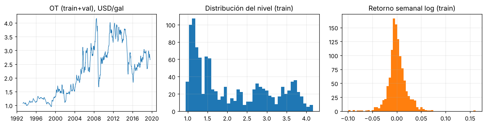
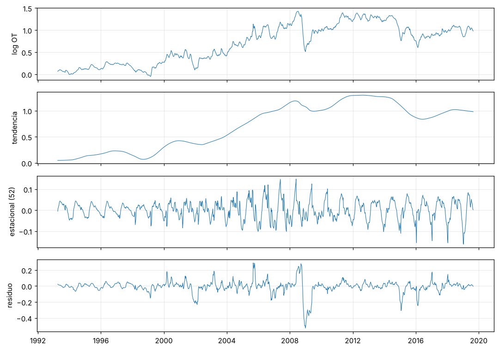
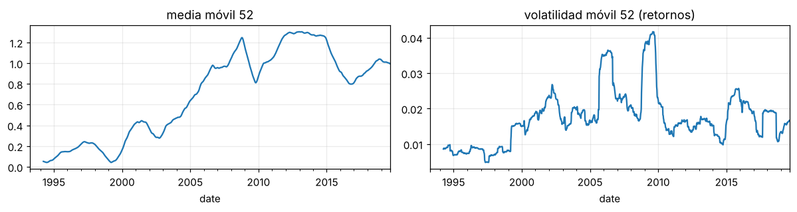
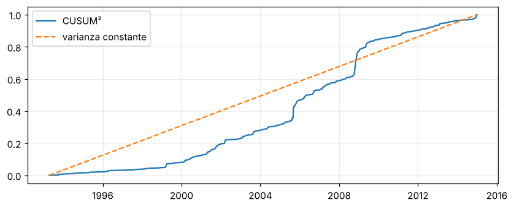
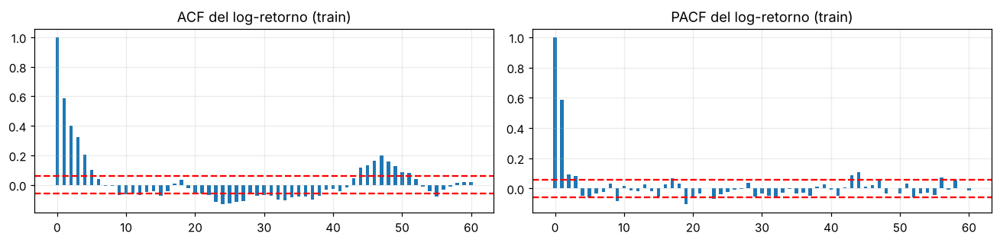

2. Análisis exploratorio de datos (EDA)#
Cada sección termina con Decisión de preprocesamiento · Impacto en la arquitectura · Riesgos. Para no consultar el conjunto de prueba durante el diseño, todas las estadísticas de diseño usan solo entrenamiento (o entrenamiento+validación donde se indica); la prueba solo aparece en la Sección 2.9 (prueba de desplazamiento de covariables, que usa las entradas, no las etiquetas).
%matplotlib inline
import sys, warnings, json
from pathlib import Path
ROOT = Path.cwd()
while not (ROOT / "src").exists(): ROOT = ROOT.parent
sys.path.insert(0, str(ROOT / "src"))
warnings.filterwarnings("ignore")
import numpy as np, pandas as pd, matplotlib.pyplot as plt
from IPython.display import Markdown, display
plt.rcParams.update({"figure.dpi": 110, "axes.grid": True, "grid.alpha": .25, "figure.figsize": (9, 3.4)})
from tsbase import config as C
from tsbase.data import load_energy, Windows, sha256, energy_path
from scipy import stats
from statsmodels.tsa.stattools import adfuller, kpss, acf, pacf
from statsmodels.tsa.seasonal import STL
from statsmodels.stats.diagnostic import het_arch
df = load_energy(); y = df[C.TARGET]; W = Windows(y.values); sp = W.split
dates = y.index; tr_idx, va_idx, te_idx = [slice(*sp.bounds[k]) for k in ("train", "val", "test")]
ytr, yva = y.iloc[tr_idx], y.iloc[va_idx]; ydes = pd.concat([ytr, yva]) # espacio de diseno (sin prueba)
dl = np.log(y).diff().dropna(); dltr = dl.loc[:ytr.index[-1]]
print(f"train {ytr.index[0].date()}..{ytr.index[-1].date()} ({len(ytr)}) | val {yva.index[0].date()}..{yva.index[-1].date()} ({len(yva)})")
train 1993-04-05..2014-12-29 (1135) | val 2015-01-05..2019-08-26 (243)
2.1 Variable objetivo#
fig, ax = plt.subplots(1, 3, figsize=(12, 3.2))
ax[0].plot(ydes.index, ydes.values, lw=.8); ax[0].set_title("OT (train+val), USD/gal")
ax[1].hist(ytr, 40, color="C0"); ax[1].set_title("Distribución del nivel (train)")
ax[2].hist(dltr, 60, color="C1"); ax[2].set_title("Retorno semanal log (train)")
plt.tight_layout(); plt.show()
q = lambda s: pd.Series({"media": s.mean(), "desv": s.std(), "asimetría": stats.skew(s), "curtosis exceso": stats.kurtosis(s),
"Jarque-Bera p": stats.jarque_bera(s)[1], "mín": s.min(), "máx": s.max()})
pd.DataFrame({"nivel (train)": q(ytr), "log-retorno (train)": q(dltr)}).round(4)

| nivel (train) | log-retorno (train) | |
|---|---|---|
| media | 2.1260 | 0.0007 |
| desv | 0.9706 | 0.0191 |
| asimetría | 0.5003 | 0.3106 |
| curtosis exceso | -1.2302 | 7.3518 |
| Jarque-Bera p | 0.0000 | 0.0000 |
| mín | 0.9490 | -0.0989 |
| máx | 4.1650 | 0.1612 |
Interpretación. El nivel es asimétrico y multimodal (regímenes de precio); el log-retorno semanal está centrado en ~0 pero tiene colas pesadas (curtosis en exceso alta, Jarque–Bera rechaza normalidad).
Decisión: modelar en log-retornos relativos a la última observación (invariante a la escala del nivel y casi estacionario); invertir la transformación antes de calcular las métricas (se reportan en USD/gal).
Impacto en la arquitectura: la salida es un vector de 12 log-retornos; sin activación acotada en la salida. La pérdida MSE penaliza fuerte las colas; se declara y se reporta también MAE.
Riesgos: las colas pesadas hacen que RMSE sea dominado por pocos episodios (2008, 2020, 2022); por eso la métrica primaria es MASE (basada en MAE) y se reporta RMSE como secundaria.
2.2 Calidad del dataset#
cal = {
"Faltantes en OT": int(y.isna().sum()),
"Faltantes en todas las columnas": int(df.isna().sum().sum()),
"Fechas duplicadas": int(y.index.duplicated().sum()),
"Huecos (intervalo != 7 días)": int((y.index.to_series().diff().dropna() != pd.Timedelta(days=7)).sum()),
"Valores <= 0 (fuera de rango físico)": int((y <= 0).sum()),
"Ventanas casi duplicadas (retornos idénticos consecutivos de 5 semanas)": int(pd.Series([tuple(np.round(dl.values[i:i+5], 4)) for i in range(len(dl)-5)]).duplicated().sum()),
}
q1, q3 = dltr.quantile([.25, .75]); iqr = q3 - q1; out = dltr[(dltr < q1 - 3*iqr) | (dltr > q3 + 3*iqr)]
cal["Atípicos (|retorno| fuera de 3·IQR, train)"] = len(out)
display(pd.Series(cal).to_frame("valor"))
out.sort_values(key=abs, ascending=False).head(8).to_frame("log-retorno")
| valor | |
|---|---|
| Faltantes en OT | 0 |
| Faltantes en todas las columnas | 0 |
| Fechas duplicadas | 0 |
| Huecos (intervalo != 7 días) | 0 |
| Valores <= 0 (fuera de rango físico) | 0 |
| Ventanas casi duplicadas (retornos idénticos consecutivos de 5 semanas) | 0 |
| Atípicos (|retorno| fuera de 3·IQR, train) | 13 |
| log-retorno | |
|---|---|
| date | |
| 2005-09-05 | 0.161180 |
| 2008-11-03 | -0.098922 |
| 2008-10-13 | -0.097769 |
| 2008-10-27 | -0.090012 |
| 2008-11-24 | -0.088206 |
| 2008-10-20 | -0.077297 |
| 2008-11-10 | -0.075046 |
| 2009-05-11 | 0.072899 |
Mecanismo de faltantes: no hay faltantes en OT, por lo que no se requiere imputación (no aplica probar MCAR/MAR/MNAR; se documenta la ausencia como evidencia). No hay fechas duplicadas ni huecos: la serie es regular. Los atípicos corresponden a eventos reales de mercado (p. ej., 2005 Katrina/Rita y 2008), no a errores de captura.
Decisión: no eliminar ni recortar atípicos (son señal del fenómeno que se quiere pronosticar); no hay imputación.
Impacto en la arquitectura: ninguna sobre la entrada; la robustez se evalúa en el Cap. 6.
Riesgos: si el texto se alineara por fecha de publicación, los atípicos podrían coincidir con noticias posteriores al evento (fuga) — se audita en E2.
2.3 Visualización, descomposición y cambios de régimen#
stl = STL(np.log(ydes), period=52, robust=True).fit()
fig, ax = plt.subplots(4, 1, figsize=(10, 7), sharex=True)
for a, (n, s) in zip(ax, [("log OT", np.log(ydes)), ("tendencia", stl.trend), ("estacional (52)", stl.seasonal), ("residuo", stl.resid)]):
a.plot(s.index, s.values, lw=.7); a.set_ylabel(n)
plt.tight_layout(); plt.show()
Ft = max(0, 1 - stl.resid.var() / (stl.trend + stl.resid).var()); Fs = max(0, 1 - stl.resid.var() / (stl.seasonal + stl.resid).var())
print(f"Fuerza de tendencia {Ft:.3f} | Fuerza estacional {Fs:.3f}")

Fuerza de tendencia 0.964 | Fuerza estacional 0.232
roll = pd.DataFrame({"media móvil 52": np.log(ydes).rolling(52).mean(), "volatilidad móvil 52 (retornos)": dl.loc[:ydes.index[-1]].rolling(52).std()})
fig, ax = plt.subplots(1, 2, figsize=(11, 3)); roll.iloc[:, 0].plot(ax=ax[0], title=roll.columns[0]); roll.iloc[:, 1].plot(ax=ax[1], title=roll.columns[1]); plt.tight_layout(); plt.show()
# CUSUM de cuadrados de los retornos de train: desviacion respecto de la recta 0->1 indica cambio de varianza
cs = np.cumsum(dltr.values ** 2) / np.sum(dltr.values ** 2); plt.plot(dltr.index, cs, label="CUSUM²"); plt.plot(dltr.index, np.linspace(0, 1, len(cs)), "--", label="varianza constante"); plt.legend(); plt.show()


Interpretación. La tendencia domina (fuerza ≈0.96); la estacionalidad anual es baja (fuerza ≈0.23) pero existe. La volatilidad cambia por regímenes (picos en 1999–2000, 2005–2008, 2011–2014) y el CUSUM² se aparta de la recta: varianza no constante.
Decisión: ventana relativa al último valor (elimina nivel y tendencia local); no se incluye estacionalidad explícita (el ingenuo estacional \(m=52\) se usa solo como referencia).
Impacto en la arquitectura: se espera poca ganancia de componentes estacionales; los modelos deben poder representar volatilidad variable (por eso se evalúan robustez y error por segmentos).
Riesgos: cambio de régimen entre particiones (el entrenamiento termina en 2014, antes de la caída de 2014–15, 2020 y 2022): el error de prueba puede estar dominado por regímenes no vistos.
2.4 Estacionariedad (ADF + KPSS en conjunto)#
def adf_kpss(s, name):
a = adfuller(s, autolag="AIC"); k = kpss(s, regression="c", nlags="auto")
adf_rej, kp_rej = a[1] < .05, k[1] < .05
esc = {(True, False): "1) estacionaria", (False, True): "2) raíz unitaria", (False, False): "3) evidencia insuficiente (ADF no rechaza, KPSS no rechaza)", (True, True): "4) conflicto: estacionaria en tendencia/diferencias"}[(adf_rej, kp_rej)]
return dict(serie=name, ADF_est=round(a[0], 3), ADF_p=a[1], KPSS_est=round(k[0], 3), KPSS_p=k[1], escenario=esc)
pd.DataFrame([adf_kpss(ytr, "nivel (train)"), adf_kpss(np.log(ytr), "log nivel (train)"), adf_kpss(dltr, "log-retorno (train)")]).round(4)
/tmp/ipykernel_236/3605019212.py:2: InterpolationWarning: The test statistic is outside of the range of p-values available in the look-up table. The actual p-value is smaller than the p-value returned.
a = adfuller(s, autolag="AIC"); k = kpss(s, regression="c", nlags="auto")
/tmp/ipykernel_236/3605019212.py:2: InterpolationWarning: The test statistic is outside of the range of p-values available in the look-up table. The actual p-value is smaller than the p-value returned.
a = adfuller(s, autolag="AIC"); k = kpss(s, regression="c", nlags="auto")
/tmp/ipykernel_236/3605019212.py:2: InterpolationWarning: The test statistic is outside of the range of p-values available in the look-up table. The actual p-value is greater than the p-value returned.
a = adfuller(s, autolag="AIC"); k = kpss(s, regression="c", nlags="auto")
| serie | ADF_est | ADF_p | KPSS_est | KPSS_p | escenario | |
|---|---|---|---|---|---|---|
| 0 | nivel (train) | -1.682 | 0.4403 | 4.891 | 0.01 | 2) raíz unitaria |
| 1 | log nivel (train) | -1.514 | 0.5268 | 5.103 | 0.01 | 2) raíz unitaria |
| 2 | log-retorno (train) | -7.726 | 0.0000 | 0.066 | 0.10 | 1) estacionaria |
Interpretación (cuatro escenarios). En nivel, ADF no rechaza la raíz unitaria y KPSS rechaza la estacionariedad: ambos concuerdan en no estacionariedad (escenario 2). En log-retornos ocurre lo contrario: ADF rechaza y KPSS no rechaza (escenario 1).
Decisión: trabajar con diferencias de log (retornos acumulados relativos al último valor).
Impacto: los modelos aprenden la dinámica de cambios, no del nivel; evita extrapolar niveles no vistos en la prueba.
Riesgos: la diferenciación elimina información de nivel (p. ej., reversión a la media de largo plazo); se vigila con el error a \(h=12\).
2.5 Dependencia temporal y longitud de ventana#
nl = 60; a = acf(dltr, nlags=nl); p = pacf(dltr, nlags=nl); b = 1.96 / np.sqrt(len(dltr))
fig, ax = plt.subplots(1, 2, figsize=(12, 3))
for k, (v, t) in enumerate([(a, "ACF del log-retorno (train)"), (p, "PACF del log-retorno (train)")]):
ax[k].bar(range(nl + 1), v, width=.5); ax[k].axhline(b, ls="--", c="r"); ax[k].axhline(-b, ls="--", c="r"); ax[k].set_title(t)
plt.tight_layout(); plt.show()
sig = [i for i in range(1, nl + 1) if abs(p[i]) > b]; print("Rezagos PACF significativos:", sig)
f, Pxx = __import__("scipy").signal.periodogram(dltr.values - dltr.mean()); top = np.argsort(Pxx)[::-1][:5]; print("Periodos dominantes (semanas):", np.round(1 / f[top], 1))

Rezagos PACF significativos: [1, 2, 3, 5, 9, 17, 19, 23, 43, 44, 56]
Periodos dominantes (semanas): [51.5 16. 25.8 22.7 22.2]
Interpretación. El log-retorno semanal tiene autocorrelación corta y significativa (rezagos 1–3, 5, 9, 17, 19, 23). El periodograma tiene su máximo en ≈51.5 semanas (estacionalidad anual, consistente con la fuerza estacional baja de la Sección 2.3), pero el ingenuo estacional resulta mucho peor que la persistencia (Sección 2.10), por lo que ese componente aporta poco a la predicción.
Decisión: longitud de ventana L = 26 semanas: cubre todos los rezagos significativos hasta el 23 con margen, sin llegar a 52 (que reduciría las ventanas de entrenamiento y añadiría ruido). Limitación declarada: con L=26 la ventana no ve un ciclo anual completo; si E2/E3 sugirieran lo contrario, L=52 se evaluaría como variante.
Impacto: el MLP recibe 26 entradas; la LSTM, una secuencia de 26 pasos; la CNN 1D, un mapa de longitud 26. Horizonte H = 12 con estrategia multi-salida directa (evita acumulación de errores de la recursiva).
Riesgos: L se fijó con train, no con validación ni prueba.
2.6 No linealidad y heterocedasticidad#
arch = het_arch(dltr.values - dltr.mean(), nlags=12)
bds = __import__("statsmodels.tsa.stattools", fromlist=["bds"]).bds
from statsmodels.tsa.ar_model import AutoReg
res = AutoReg(dltr.values, lags=3, trend="c").fit().resid
b_ = bds(res, max_dim=3)
pd.DataFrame({"prueba": ["ARCH-LM (12 rezagos) sobre retornos", "BDS dim=2 sobre residuo AR(3)", "BDS dim=3 sobre residuo AR(3)"],
"estadístico": [arch[0], b_[0][0], b_[0][1]], "p": [arch[1], b_[1][0], b_[1][1]]}).round(5)
| prueba | estadístico | p | |
|---|---|---|---|
| 0 | ARCH-LM (12 rezagos) sobre retornos | 222.69031 | 0.0 |
| 1 | BDS dim=2 sobre residuo AR(3) | 9.33646 | 0.0 |
| 2 | BDS dim=3 sobre residuo AR(3) | 11.44726 | 0.0 |
Interpretación. ARCH-LM rechaza homocedasticidad y BDS rechaza la independencia de los residuos de un AR(3): hay heterocedasticidad condicional y dependencia no lineal, es decir, margen para modelos no lineales sobre un AR lineal.
Decisión: modelos no lineales (MLP, LSTM, CNN) como baselines; referencia lineal (Ridge) para dimensionar el margen.
Impacto: no se justifica por sí sola una pérdida heterocedástica en E1; se declara como mejora posible para E2/E3.
Riesgos: la no linealidad detectada puede venir de pocos episodios extremos y no de estructura aprendible.
2.7 Frecuencia, granularidad y series múltiples#
Frecuencia semanal regular sin huecos (Sección 2.2). Es una sola serie objetivo: no hay decisión local/global; el modelo es local univariado. No se requiere imputación; si en E2/E3 se agregan covariables con huecos, la imputación deberá ser causal (solo pasado).
2.8 Partición del dataset#
tab = pd.DataFrame({"partición": ["entrenamiento", "validación", "prueba"],
"inicio": [dates[a].date() for a, b in sp.bounds.values()], "fin": [dates[b-1].date() for a, b in sp.bounds.values()],
"semanas": [b - a for a, b in sp.bounds.values()], "ventanas (L=26,H=12)": [len(sp.origins(k)) for k in sp.bounds]})
display(tab)
import hashlib; print("Hash SHA-256 de la prueba congelada:", hashlib.sha256(np.ascontiguousarray(W.y[sp.bounds['test'][0]:]).tobytes()).hexdigest())
seg = pd.DataFrame({k: {"media log-nivel": np.log(y.iloc[slice(*sp.bounds[k])]).mean(), "desv log-nivel": np.log(y.iloc[slice(*sp.bounds[k])]).std(),
"desv retorno": dl.reindex(y.index[slice(*sp.bounds[k])]).std()} for k in ("train", "val")}).T.round(4); seg
| partición | inicio | fin | semanas | ventanas (L=26,H=12) | |
|---|---|---|---|---|---|
| 0 | entrenamiento | 1993-04-05 | 2014-12-29 | 1135 | 1098 |
| 1 | validación | 2015-01-05 | 2019-08-26 | 243 | 232 |
| 2 | prueba | 2019-09-02 | 2024-04-29 | 244 | 233 |
Hash SHA-256 de la prueba congelada: e03e8f0402c53d4fcbf95e50c6f6a780aa35a6b3fd19cd5af2236aa1adab835a
| media log-nivel | desv log-nivel | desv retorno | |
|---|---|---|---|
| train | 0.6498 | 0.4575 | 0.0191 |
| val | 0.9313 | 0.1084 | 0.0186 |
Estrategia: cronológica estricta 70/15/15 (determinista, sin semilla). Las ventanas se asignan por el tiempo de sus etiquetas: ninguna etiqueta de entrenamiento cae en validación/prueba; las entradas de una ventana de validación pueden contener datos de entrenamiento (solo pasado). La escala (desviación de las entradas) y la escala de la MASE se ajustan solo con entrenamiento. La prueba está congelada (hash arriba) y se evalúa una sola vez por corrida.
Decisión: partición fija de validación (en vez de validación cruzada anidada), porque la serie es corta (≈1 600 puntos) y la dependencia temporal impide mezclar.
Impacto: la selección de hiperparámetros y el early stopping usan solo validación.
Riesgos: una sola partición cronológica da una sola realización del régimen de prueba; se declara como amenaza a la validez externa.
2.9 Desplazamiento de distribución entre particiones#
from sklearn.ensemble import RandomForestClassifier
from sklearn.model_selection import GroupKFold
from sklearn.metrics import roc_auc_score
def feats(part):
d = W.get(part, allow_test=True)["X"]; return np.c_[d.std(1), np.abs(d).sum(1), d[:, -5:].mean(1), d.max(1) - d.min(1)]
F = {k: feats(k) for k in ("train", "val", "test")}
rows = []
for a, bpart in [("train", "val"), ("train", "test")]:
X = np.vstack([F[a], F[bpart]]); yy = np.r_[np.zeros(len(F[a])), np.ones(len(F[bpart]))]
grp = np.r_[np.arange(len(F[a])) // 40, 1000 + np.arange(len(F[bpart])) // 40] # bloques contiguos de 40 ventanas
auc = []
for tri, tei in GroupKFold(5).split(X, yy, grp):
if len(np.unique(yy[tri])) < 2 or len(np.unique(yy[tei])) < 2: continue
auc.append(roc_auc_score(yy[tei], RandomForestClassifier(200, random_state=0, min_samples_leaf=5).fit(X[tri], yy[tri]).predict_proba(X[tei])[:, 1]))
ks = stats.ks_2samp(dl.reindex(y.index[slice(*sp.bounds[a])]).dropna(), dl.reindex(y.index[slice(*sp.bounds[bpart])]).dropna())
vr = dl.reindex(y.index[slice(*sp.bounds[bpart])]).std() / dl.reindex(y.index[slice(*sp.bounds[a])]).std()
rows.append({"comparación": f"{a} vs {bpart}", "AUC adversarial (CV por bloques)": np.mean(auc) if auc else np.nan, "KS retornos p": ks.pvalue, "razón de desv. de retornos": vr})
pd.DataFrame(rows).round(4)
| comparación | AUC adversarial (CV por bloques) | KS retornos p | razón de desv. de retornos | |
|---|---|---|---|---|
| 0 | train vs val | 0.4994 | 0.0532 | 0.9738 |
| 1 | train vs test | 0.5006 | 0.3350 | 1.0422 |
Interpretación. Un AUC adversarial cercano a 0.5 indica distribuciones de entrada similares. Aquí el AUC es ≈0.50 en ambas comparaciones y la razón de desviaciones de los retornos es ≈1: las entradas relativas (log-retornos de la ventana) no muestran desplazamiento detectable. Esto no descarta desplazamiento en el nivel del precio (la desviación del log-nivel difiere mucho entre entrenamiento y validación): como la ventana es relativa, el modelo no ve el nivel, pero las métricas en USD sí dependen del nivel. El clasificador usa solo entradas (no etiquetas). La CV por bloques contiguos reduce, pero no elimina, la fuga por autocorrelación (limitación declarada).
Decisión: no se reajusta nada con la prueba; el desplazamiento se trata como amenaza a la validez y se analiza el error por segmento temporal en el Cap. 6.
Impacto: los modelos con alta capacidad pueden sobreajustar al régimen de entrenamiento (2014 y antes).
Riesgos: una conclusión basada en la prueba (2019–2024, que incluye COVID y 2022) puede no extrapolar a otros regímenes.
2.10 Referencias ingenuas y margen de mejora (solo validación)#
from sklearn.linear_model import Ridge
from tsbase.metrics import summarize
tr, va = W.get("train"), W.get("val"); sc = W.mase_scale()
pers = np.repeat(va["last"][:, None], C.H, 1)
seas = np.stack([[W.y[t + h - 52] for h in range(1, C.H + 1)] for t in va["org"]])
rg = Ridge(alpha=1.0).fit(tr["X"], tr["Y"]); rid = W.to_levels(rg.predict(va["X"]), va["last"])
pd.DataFrame({n: summarize(va["truth"], p, sc) for n, p in [("Persistencia", pers), ("Ingenuo estacional (52)", seas), ("Ridge lineal", rid)]}).T[["MASE_1:12", "RMSE_1:12", "MAE_1:12", "MASE_h1", "MASE_h12"]].round(4)
| MASE_1:12 | RMSE_1:12 | MAE_1:12 | MASE_h1 | MASE_h12 | |
|---|---|---|---|---|---|
| Persistencia | 1.1138 | 0.1752 | 0.1377 | 1.1733 | 1.0811 |
| Ingenuo estacional (52) | 4.4108 | 0.5018 | 0.4021 | 14.2529 | 1.9477 |
| Ridge lineal | 1.0163 | 0.1612 | 0.1268 | 0.9851 | 0.9748 |
Interpretación. La persistencia es muy difícil de superar a horizontes cortos (el precio es casi una caminata aleatoria); el ingenuo estacional es mucho peor. La referencia lineal dimensiona el margen disponible para modelos no lineales.
Decisión: la persistencia es el baseline trivial que los tres modelos deben superar (criterio de adecuación del E2/E3).
Riesgos: si los modelos de DL no superan claramente a Ridge, su complejidad no se justifica con esta serie univariada.
2.11 Sesgos y atajos#
Sin clases ni subpoblaciones; los sesgos relevantes son temporales (Secciones 2.3 y 2.9). Atajo posible: el nivel absoluto del precio (el modelo podría memorizar niveles de un régimen); se mitiga con la ventana relativa y la escala fijada en entrenamiento.